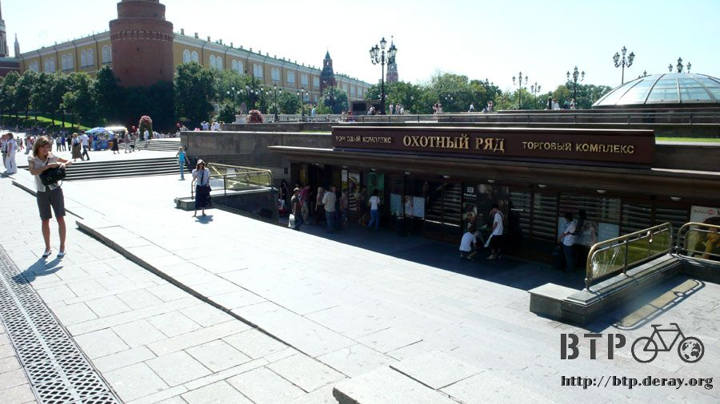
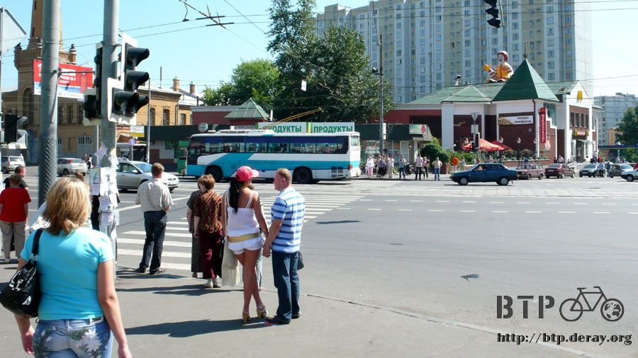

穿越地底與河流
吃完午餐之後走進這個地下街的入口， 從這裡可以直通地鐵站，今天早上出發的時候本來目的地是搭到這一站。

這個地下商場看起來就像一棟地層下陷的百貨公司，外面看起來雖然不怎麼樣，進去之後就是一般常見百貨公司。
只進了一個門居然內外差異這麼大，莫斯科的地底世界真是很有趣。
往地鐵站的路上就看到無意義的設施，金屬感應器，只要是有人走過去，那個門沒有不嗶嗶叫的，但既沒有保全也沒有人在意，何必處處設立這樣的東西。

準備再度進車站，車站內的照片快門大約是1/5～1/8，當人快速走動的時候拍起來就變成忍者的樣子。
已經盡力讓背景畫面不要晃到，行色匆匆的行人總不能喝令大家站著不許動，等我拍完照才准走。
車站門旁邊是員工的工作崗位，像這樣的電話亭辦公室地鐵站常會看到，要監看攝影機、查有沒有人逃票、提供諮詢，今天看到清一色都是媽媽員工。
過了票口就進入車站了，這邊的燈飾是圓形的，看起來像燈籠，這一站設立在紅場大門，但是裡面蠻樸素的。
一百七十一個車站有幾個是出了名的華麗，到時候會特地搭車去那邊參觀。
轉換不同地鐵線路的時候都要走一段路，這些連接的路蓋得實在很驚人，像戰爭期間的隧道一樣。
又深又長的路，頭上是半圓弧型的天花板，配上白光照明讓原本應該漆黑的隧道光可鑑人。

搭車不難，看著指示牌都是俄文也不用擔心，上面清楚的標記了顏色和數字，一號紅色線往右，二號藍色線往左。
這一站連接了其它兩條路線，非常的繁忙，搭車的乘客絡繹不絕，天花板的雕刻很漂亮。
抬著頭往上看，驚嘆連連的向前走，還要小心別跟路人撞個滿懷。
轉車時間，另一個連接地鐵線路的隧道，實在太美麗啦～
早上走很多路，找個位置坐下來休息一下，下午還有更多路要走。
跟著顏色和數字走，咖啡色的五號環狀線，把握這個原則，不論地鐵再怎麼複雜也不容易迷路。
現在要先搭車回去宿舍，把記憶卡的照片存起來。
拍了這麼多張照片，萬一記憶卡損毀的話我會哭死，一朝被蛇咬十年怕草繩，用過一次爛記憶卡，拍照都顯得格外小心。
回去還可以沖個澡跟上廁所，街頭的流動廁所一次要十盧布，沒看見有免費的公廁，能省則省呀。
重新搭回了出發點的車站，看這些俄文字母想試著發音，舌頭都會打結～俄文若能學得好，這個人一定很有語言天分。
在宿舍休息一下接著繼續搭地鐵，這次往莫斯科的東北方去，那邊有一座大公園。
地鐵的車廂之間是沒有走道的，不能沿著車廂一直走，所以搭車的時候得看哪一邊比較空曠，這樣才好找位子坐。
往公園去的路很單純，從環狀線接上紅色線之後就算成功一半，沒有畫停車等候線的月台就像這個樣子，大家隨意猜可能的停車點。
無論如何下車乘客都是優先被禮讓的，車廂內的廣播非常簡短，只報站名，沒有囉嗦一大堆什麼請禮讓老人、不要喧嘩，有公德心的國家不需碎碎念。
公園站抵達，這一站比較樸素，只有大根的大理石柱子。

出站啦～再度重返陽光之下。
地鐵站的入口很容易辨識，大大紅色的M，總是讓我聯想到瑪莉歐，這邊有一個和車站同名的公園。
往公園的路上看到另一間麥當勞，剛才在紅場那一間沒看見的麥當勞叔叔，正坐在屋頂上攬客。
路上跑過一台再普通不過的公車，唯一不一樣的就是它是倚靠電力，車後沒有排氣管，當然也不會排放廢氣。

看見這個書報攤讓我很興奮，很難得看到這樣開放式的攤位，其它地方的書報攤都是只能遠觀不能拿起來翻的那種小窗口商店。
比開放式商店更難得的就是這個，計程車。
不僅車上有掛牌，連車身都漆成黃色，實在太不可思議了，莫斯科滿街的路上全都是私家計程車，居然還是有正港的在營業。
但是這種的生意都不好，因為價錢是私家車的三～四倍，唯一好處是它可以拿收據，如果搭車需要報帳的話就得找有牌的車才行。
光頭佬帶著女朋友吃冰，旁邊是他們的腳踏車。
莫斯科有一種讓人頭大的『光頭黨』，是狂熱的納粹份子，對有色人種很不友善，常聽到三個或是三十個打一個的情形，而且是沒有理由就開扁。
光頭黨的成員不全部都是光頭，同時也不代表光頭的人就是光頭黨，所以沒必要看到頂上沒毛的就閃得老遠。
這個光頭佬看起來雖然有點兇狠，但完全是面惡心善呀，他也騎自行車、也喜歡吃杯子冰淇淋，光是這兩點就足以讓我們成為好朋友。
如果光頭的都是壞人的話，那這一個一定很壞很壞～眼神不要跟他交集，到時候被揍我可不管。
這邊就是公園的入口了，鐵欄杆圍得大多了，沒有公園那種開放的感覺，該不會這邊是要買票的吧？
旁邊的公園說明圖，目前所在位置是最南方的入口，進去之後有個噴水池，然後是輻射狀的路線。
這邊真的是要買票才能進去，售票處沒幾個人在排隊，門口有人在收票，但是很多當地人都是舉手說個嗨～然後就直接走進去。
票價非常便宜，只要十塊盧布，票非常的陽春，簡單到放在手上一陣風吹過就飛走了，趕緊去撿回來。
這種票是列印一大張，售票員拿一隻尺逐張撕下，票價是用蓋章的，大概是浮動價格吧。
將票拿給門口的收票員，他就當場撕成對半丟進桶子裡，雖然只是一張紙但是我想保存呀>"<
一進來就看見賣氣球的攤販，紅色大愛心的氣球是最常看到情侶拿在手上的，表示正在熱戀中。
公園裡播放著音樂，一群年紀都是阿公阿嬤的人在廣場上開心地跳著舞，雖已年過半百，活力卻一點也不輸年輕人。
騙小孩的遊園火車，小孩都會吵著要搭，所以家長也要跟著搭，生意好得不得了～
這輛車其實蠻可愛的，說它是騙小孩有點太刻薄，其實自己也有一點想搭著繞一圈，這樣就不用走得那麼累。
公園裡面最多的依然是直排輪，腳踏車和滑板次之，這位打赤膊的大叔拎了一個袋子，好像是出來買菜的。
除了小火車也有馬車，棕毛白色斑點的馬配上穿著正式的馬伕，另外也有迷你馬可以騎乘。
公園裡不可少的就是鴿子啦，已經被人養到完全不怕生了，自備點乾麵包就能被鴿子包圍。
這就是公園地圖上的那個噴水池，剛從紅場走過來，看到這個心裡覺得，嗯～真的是噴水池，普通的老實。
公園裡種了很多高高的大樹，樹蔭中有一些桌椅，老伯們會坐在裡面下西洋棋。
自備棋盤、棋子和計時的鐘，走過下棋區的時候就會被沒有對手的老伯問說要不要來一場，不知道有沒有小賭怡情？
這座公園裡面有非常非常多的遊樂設施，打靶類的尤其多，獎品全部都是各式各樣的布偶，一路上就看見很多情侶抱著布偶走出公園，是今天的戰利品。
通過噴水池之後往前走，穿越遊戲攤販區就會抵達摩天輪，非常迷你的摩天輪，一點也不高～
牽手走過摩天輪底下的情侶，手上正拿著熱戀中的愛心氣球～
走過摩天輪就是兒童樂園，設施還蠻多樣的，但是好冷清喔，都沒人在，任由這些機器空轉著有點空虛，都沒看到小朋友在這裡嬉笑的畫面。
公園這樣就結束了，心裡有點失望，從地圖上看起來這邊比1943二戰廣場還要大，但是值得看的東西太少了。
往回走到地鐵站，路上不時會看見這種教堂，規模不小可是地圖上完全沒記載，當然我也不知道這是什麼建築。
再度進入地鐵站，看見藍色箭頭和紅色的禁止通行嗎？

地鐵完全是採取信賴的措施，剛才我就是從那個紅色小人的地方走出站，現在往藍色箭頭走才會進到刷票口。
換句話說，這邊根本就沒有任何防堵逃票的機制，只要走旁邊就可以一路進到地鐵站，連票都可以省下來。
其它站有的漏洞更大，出口就在側門，入口在正門，只有入口才有員工媽媽在查看，所以只要從側門進去的話，搭車也是免費。
法國地鐵逃票很嚴重，常常都會有一堆警察大規模的在地鐵中查票，抓到就罰十倍或是更重。
莫斯科地鐵完全不管你，要是你真的想逃票就儘管來吧，只要對得起良心的話。
從這個只有大理石柱的月台搭車往回走，一樣保持在紅色線不需要換車，從目前的東北方往西南走，下一個目標是莫斯科大學。
車廂內路線圖，紅色線有莫斯科唯一一座蓋在跨河大橋中央的車站，之前從河畔外看過，今天終於有幸能進去參觀。
某個站的月台看見的磁磚壁畫，繪製得極好，看起來這些磁磚都是繪製之後燒烤出來然後像拼圖那樣拼湊出這幅畫。
在走廊的左右兩側各有一幅，主題都是勞動中的工人，上面是左半邊，下面則是右半邊。
又是華麗建築的一站，天花板都是馬賽克拼貼，抬頭欣賞這些屬於大眾的藝術創作。
走下階梯往上拍一張，旁邊就是進站的地鐵，一般火車站都會把車站的外觀或是大廳裝飾得豪華，像莫斯科地鐵這樣費心思裝飾月台的真是相當的罕見。
抬頭向上就能看到這樣的創作，列寧真是無處不在呀。

相較於華麗的月台，列車倒是挺普通的，由於地鐵已經開通八十多年，列車不斷的汰舊換新，每次搭到的車子都不太一樣。
統一特色就是沒有手握的拉環、車廂間沒有連結的走道、很安靜&乾淨，地鐵中的風很大，既新鮮又涼快，真是不敢相信身處地底下。
停靠的時候我都會探頭出去看這一站有沒有什麼特色？感覺很漂亮的站就會下車拍照，然後搭下一班車繼續走。

牆壁上這些藍色底，白色浮雕的作品都是不重複的，記錄著俄羅斯每一位重要的人物。
俄羅斯人不希望這些人被遺忘，與其將他們放在教科書或是博物館中，不如就這樣放在大家每天會經過的地方、伸手可及的處所。
一邊觀光一邊搭車，有些地方還是能看見八十多年的老舊痕跡，像是列車上方天花板有明顯剝落。
地鐵站內也有規模不等的施工，讓地鐵可以繼續的營運下去並且保持最好的一面。
從月台邊往鐵軌處的牆面看就是該站的名稱，每一站設計皆不相同，各有各的風味，這一站是SERPUKHOVSKAYA。
忘記站名了，只覺得很漂亮就下車拍照，除了古典的創作之外像這種簡單線條的設計也很好看。
搭著手扶梯移動，這邊只有一座手扶梯。一樣是很深很長的距離。
這邊的手扶梯有點奇怪，腳踏的部分和扶手的部分速度有點不一致，扶手走得比較快，要是手握著不放的話就會慢慢地被往前拉。
販賣眼鏡的店，連這樣的店都是用小窗口的經營模式，整個也太不方便了吧，想買眼鏡還要透過店員說幫我拿哪一付我想試戴，說不定根本就不能試戴~_~
從天橋往下看的月台，這邊的燈飾像火把設計，接下來的照片文字描述就不多寫了，請自行感受莫斯科地鐵之美。
車來啦～快點跑下天橋～以前都是走樓梯下到月台的中央，現在都是走天橋跨過鐵軌才到月台，視覺感受很不一樣。
地鐵的上方天橋處有四個警察牽著一條大狼狗，出站的乘客就會經過他們面前，之後等我回到這一站他們還是在原地，但不會多做盤問。
紅色線往西南方搭，本來窗戶外都是漆黑一片，莫斯科地鐵的窗戶是可以打開的，外面的風涼快又乾淨，一點臭味也沒有。
走著走著就突然變成一片明亮，相當著名的這一站到了，設立於橋的正中央。
地鐵停穩的時後透過窗戶看到美麗的河景，心裡想說怎麼還不開門，我要下去參觀呀～結果門是開另外一邊，從這裡出去的話可沒有月台。
趁地鐵開走之前趕緊拍照片，每站的發車時間似乎沒有規定，駕駛想走就可以開走，車子的兩旁都有後照鏡，猜是拿來看乘客上下車的狀況。
這一站非常明亮，沒有牆壁，全部都是用大片的窗戶所構成，從月台望著河景真是說不出的美麗呀～

潔淨明亮的大廳～不需要加裝燈泡，自然的陽光就是最佳的照明，不同的時間來都會有不同的感受。
三分鐘後下一班車就來了，是一輛猩紅色的漂亮車種，跟剛才那一列有點老舊的相比完全不一樣喔。
內裝飾黃、紅色系，除了比較新之外，整體的構造都是一樣的，都使用柔軟座椅，不是硬梆梆的塑膠椅，陽光照射之下車廂看起來跟在地底下很不一樣。
從橋這裡再往下搭一站就是大學站，大學指的當然就是莫斯科最高學府～來去參觀吧～請接著看下一篇，麻雀山的最高學府
繼續閱讀：8.11 麻雀山的最高學府